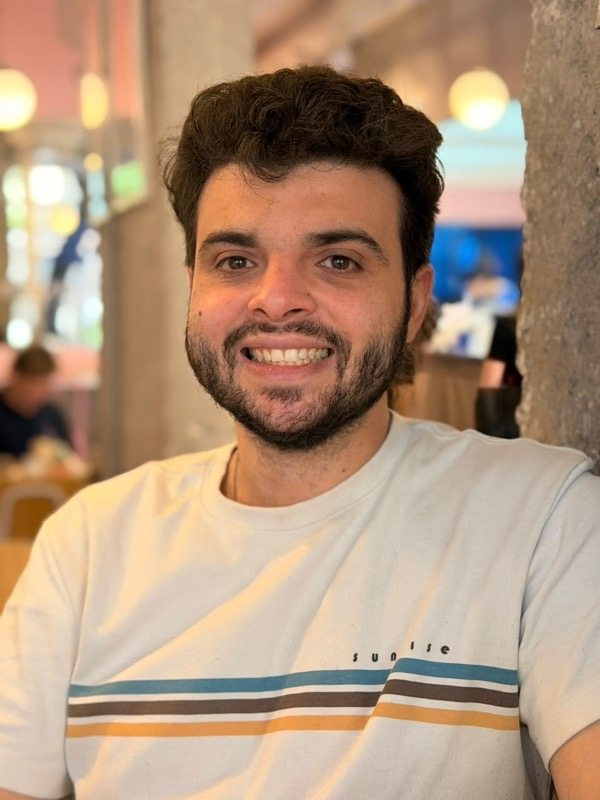

Combinando arquitectura de software, análisis funcional y dirección creativa para estructurar y escalar proyectos rentables en la industria de los videojuegos.
Ver Trayectoria Contacto
Director general del estudio independiente. Diseño y producción del roguelite twin-stick "The Kernel Keeper" en Unity.
Desempeño en el núcleo de I+D de la facultad, desarrollando proyectos clave:
Profesor en instituciones de educación superior, cerrando la brecha entre la teoría académica y las prácticas reales de la industria tecnológica:
Gestión de comunidad estable de gaming y entretenimiento en vivo.
Un roguelite táctico twin-stick en un escritorio de los 90 convertido en campo de batalla.
Lidero un equipo multidisciplinario:
Mi rol:
Gestión de proyectos, bizdev, monetización y estándares europeos.
Arquitectura de software, datos complejos y gestión integral.